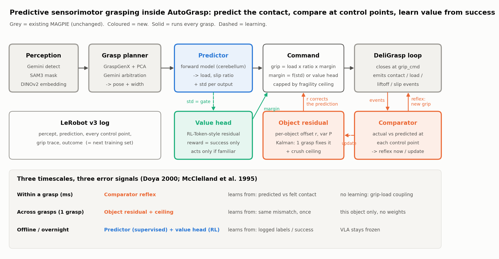
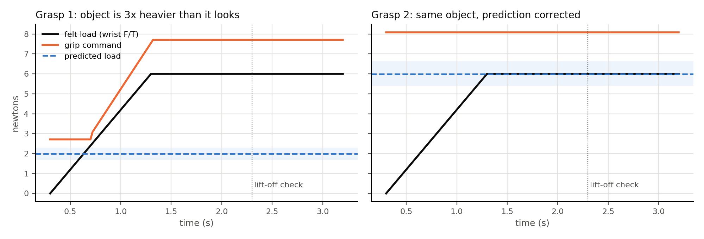
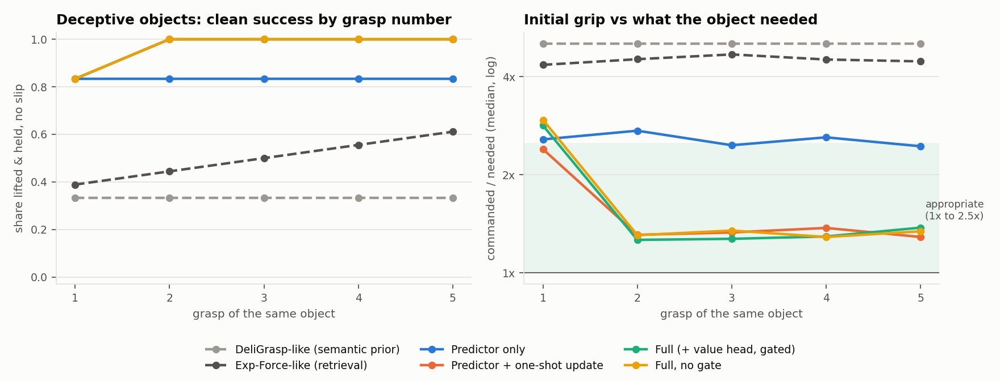
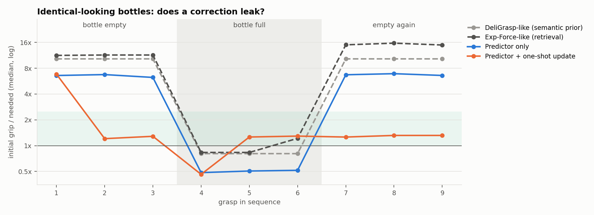
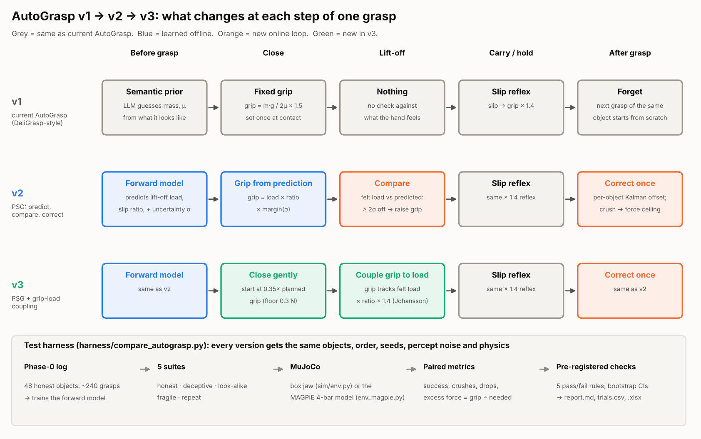
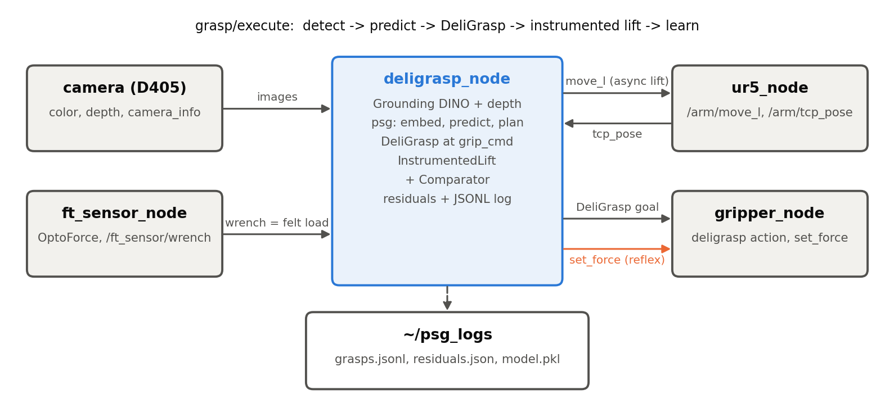

Predictive Sensorimotor Grasping
A robot that guesses how heavy something is before it touches it, checks that guess as it lifts, and fixes the guess for that object after one try, the way people do.
The idea
Most robot grippers pick a force before contact and then react if the object slips. Nothing they feel during one grasp changes the next. People work differently: before the fingers touch, the brain already expects a weight and a slipperiness. Contact, lift-off and slip are checkpoints where that expectation meets sensation. If a box is heavier than it looked, grip force rises within about 70 ms and the expected weight is rewritten in a single lift (Flanagan, Bowman & Johansson, 2006).
The strangest part is the size-weight illusion. Lift a big and a small cube of the same weight twenty times and you will still feel the small one as heavier, yet your grip force is right after one or two lifts. The motor system keeps its own belief, separate from perception. PSG builds that split into a grasp controller.
Architecture

Predictor
From the DINOv2 embedding and grasp geometry, predicts the load at lift-off and the grip-to-load ratio where the object slips, each with an honest uncertainty. Trained offline on logged grasps.
Comparator + residual
Checks felt load against the prediction at each checkpoint. Too heavy: raise grip now. After the grasp: one Kalman update to this object's correction. A big surprise resets its uncertainty so one grasp is enough.
Value head
Learns the safety margin from grasp success only. Prediction error is never the reward; it only decides whether the value head is trusted to act.
One object, two grasps

Results so far
A parallel-jaw gripper in MuJoCo lifts boxes 10 cm and holds them. Training objects are honest; the test set adds 30 unseen objects and six that lie: a big hollow box and a small dense block, identical bottles one empty one full, hollow metal that dents, lead-filled plastic. Baselines get the same slip reflex, so only prediction and learning differ.
| Method | Deceptive: lifted & held | Deceptive: grip appropriate | Unseen: force error |
|---|---|---|---|
| DeliGrasp-like (semantic prior) | 39% | 0% | 1.93 N |
| Exp-Force-like (retrieval) | 51% | 16% | 3.07 N |
| Predictor only | 83% | 0% | 0.99 N |
| Predictor + one-shot update | 97% | 78% | 0.93 N |
| Full (+ value head) | 97% | 73% | 0.70 N |


v1 vs v2 vs v3
v1 is the current AutoGrasp: guess mass and friction from what the object looks like, set one grip, react to slip. v2 is PSG. v3 adds grip-load coupling: close gently, then let grip rise with the load the wrist actually feels.

Five seeds, paired (same objects, order, sensor noise and physics for every version). Success rate, crushes in brackets:
| Suite | v1 | v2 PSG | v3 PSG + coupling | v1 | v2 | v3 |
|---|---|---|---|---|---|---|
| simple jaw | MAGPIE model | |||||
| Honest, unseen | 100% | 100% | 100% | 99% | 100% | 100% |
| Deceptive weight | 40% | 97% | 99% | 50% | 97% | 99% |
| Look-alike bottles | 80% | 100% | 100% | 100% | 100% | 100% |
| Fragile, looks sturdy | 33% (30) | 82% (8) | 100% (0) | 33% (30) | 84% (7) | 100% (0) |
| Same object ×5 | 100% | 100% | 100% | 100% | 100% | 100% |
Which part does the work?
| Version (MAGPIE) | Coupling | Memory | Deceptive | Fragile (crushes) | Grip ÷ need |
|---|---|---|---|---|---|
| v1, looks-based prior | no | no | 50% | 33% (30) | 5.4× |
| v1 + coupling | yes | no | 83% | 67% (15) | 2.5× |
| Learned prediction only | no | no | 83% | 49% (23) | 3.2× |
| Prediction + coupling | yes | no | 98% | 98% (1) | 1.6× |
| Prediction + memory | no | yes | 97% | 82% (8) | 1.25× |
| v4 = v3 without value head | yes | yes | 99% | 100% (0) | 1.3× |
Coupling stops first-grasp failures but needs a roughly right prediction; memory brings force down from grasp 2. Neither is enough alone.
On the robot
PSG plugs into the MAGPIE ROS 2 stack behind one flag in deligrasp_node. With it on, DeliGrasp starts at the predicted force, the retreat becomes a measured lift using the wrist force/torque sensor, and every grasp is logged as training data.

/gripper/set_force.Run the simulation
git clone https://github.com/ACWArob/predictive-sensorimotor-grasping cd predictive-sensorimotor-grasping python3 -m venv .venv && source .venv/bin/activate pip install mujoco numpy matplotlib pytest python -m pytest tests -q # 3 fast checks python -m sim.run_experiments --seeds 3 # ~2 min on an M4 Pro; writes results/
On macOS use mjpython instead of python to open the MuJoCo viewer.
Closest related work
| Work | What it does | Difference |
|---|---|---|
| Exp-Force (2026) | Picks pre-grasp force from retrieved past grasps + a VLM | Open-loop; no checkpoints or per-object correction |
| Huang et al. (2025) | Reuses one grasp's sensing to set force when regrasping | No vision prior, uncertainty, or learned margin |
| RL-Token, EXPO-FT (2026) | Small RL residual on a frozen VLA | Template for our value head; no sensory prediction |
| LIFT (2026) | Injects force into a VLA to react after contact | Reacts; PSG predicts before contact |
| PhysMem, MemoryVLA (2026) | Rule memory for a planner; token memory inside a VLA | Not grasp-force; no mid-grasp check |
References
- Flanagan, Bowman & Johansson (2006). Control strategies in object manipulation tasks. Curr. Opin. Neurobiol.
- Flanagan & Beltzner (2000). Independence of perceptual and sensorimotor predictions in the size–weight illusion. Nat. Neurosci.
- Doya (2000). Complementary roles of basal ganglia and cerebellum in learning and motor control. Curr. Opin. Neurobiol.
- McClelland, McNaughton & O'Reilly (1995). Why there are complementary learning systems. Psychol. Rev.
- Yu & Dayan (2005). Uncertainty, neuromodulation, and attention. Neuron.
- Exp-Force, arXiv 2603.08668 · Huang et al., arXiv 2503.11057 · RL-Token, arXiv 2604.23073 · EXPO-FT, arXiv 2605.25477 · LIFT, arXiv 2607.14236 · PhysMem, arXiv 2602.20323 · MemoryVLA, arXiv 2508.19236